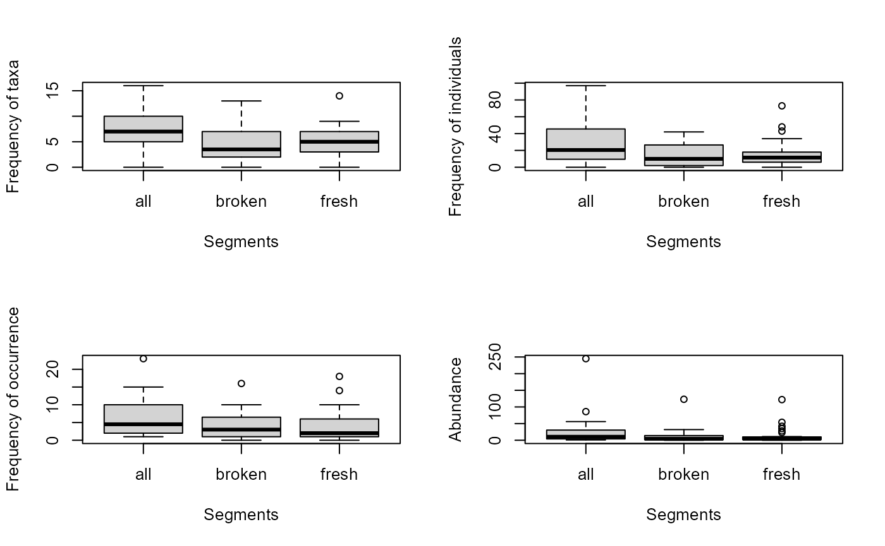
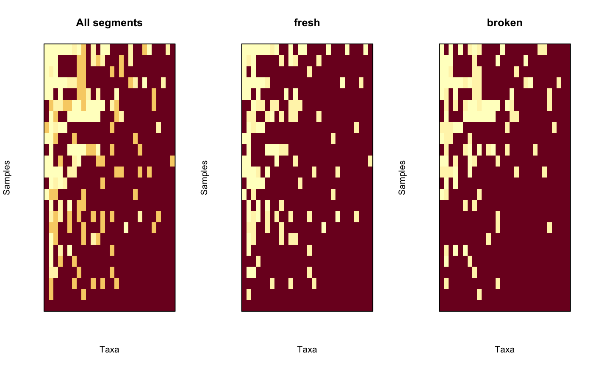
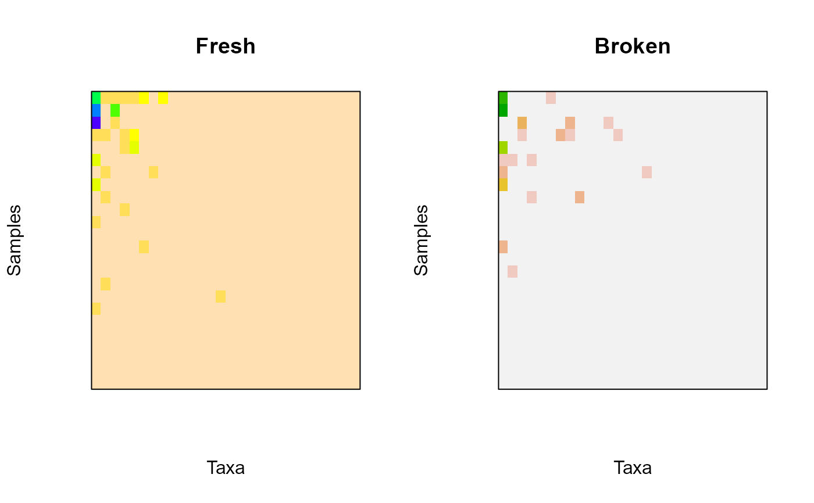

Plotting Methods for Object of Class 'mefa' and 'stcs'
plot.mefa.RdVarious methods for plotting objects of class 'mefa'.
# S3 method for mefa plot(x, stat = 1:4, type = c("hist", "rank"), trafo = c("none", "log", "ratio"), show = TRUE, ylab, xlab, ...) # S3 method for mefa boxplot(x, stat = 1:4, all = TRUE, show = TRUE, ylab, xlab, ...) # S3 method for mefa image(x, segm=NULL, trafo=c("none", "log", "bins", "prab"), probs = seq(0, 1, 0.05), ordering = TRUE, reverse = TRUE, names = FALSE, show = TRUE, ylab, xlab, ...) # S3 method for stcs plot(x, stat = 1:4, type = c("hist", "rank"), trafo = c("none", "log", "ratio"), show = TRUE, ylab, xlab, ...) # S3 method for stcs boxplot(x, stat = 1:4, all = TRUE, show = TRUE, ylab, xlab, ...) # S3 method for stcs image(x, segm=NULL, trafo=c("none", "log", "bins", "prab"), probs = seq(0, 1, 0.05), ordering = TRUE, reverse = TRUE, names = FALSE, show = TRUE, ylab, xlab, ...)
Arguments
| x | an object of class 'mefa' or 'stcs'. |
|---|---|
| stat | numeric, to determine which characteristic to plot. |
| type | character, |
| trafo | character, transformation of the plotted variable. |
| all | logical, if |
| ylab, xlab | character to overwrite default label for the y and x axes. If |
| segm | if |
| probs | numeric vector of probabilities with values in [0, 1] (passed internally to |
| ordering | logical, if |
| reverse | logical, if the values to plot should be reversed ( |
| names | logical, it labels samples and taxa in the plot using names in |
| show | logical, produce a plot ( |
| ... | further arguments to pass to plotting functions. See especially |
Details
plot returns barchart/histogram, or ranked curve of summary statistics (number of species, individuals in samples, number of occurrences or abundance of taxa) based on the x$xtab matrix of the 'mefa' objects. These values are basically returned by summary.mefa.
boxplot returns box-and-whiskers plots for the summary statistics based on matrices for each segments in x$segm.
image creates a grid of colored rectangles with colors corresponding to the values in the segment defined by the argument segm. If ordering = TRUE, the ordering of the segment will be based on the x$xtab matrix and not on the matrix for the segment itself. This is due to better comparison among segments.
All graphical display methods for objects of class 'stcs' are based on the conversion of the object into 'mefa', and than the respective plotting method is applied. The conversion is made based on the default mefa settings (e.g. with segments). If more control is needed over the object structure, use the mefa function to coerce to a more appropriate class for this.
Value
All methods produce a plot if show = TRUE, and return the plotted values invisibly, or visibly if show = FALSE.
References
S\'olymos P. (2008) mefa: an R package for handling and reporting count data. Community Ecology 9, 125--127.
S\'olymos P. (2009) Processing ecological data in R with the mefa package. Journal of Statistical Software 29(8), 1--28. http://www.jstatsoft.org/v29/i08/
http://mefa.r-forge.r-project.org/
See also
Examples
data(dol.count, dol.samp, dol.taxa) x <- mefa(stcs(dol.count), dol.samp, dol.taxa) ## Frequency distributions opar <- par(mfrow=c(2,2)) plot(x, 1) plot(x, 2) plot(x, 3) plot(x, 4)par(opar) ## Ranked curves opar <- par(mfrow=c(2,2)) plot(x, 1, type="rank") plot(x, 2, type="rank") plot(x, 3, type="rank") plot(x, 4, type="rank")par(opar) ## Boxplot for segments opar <- par(mfrow=c(2,2)) boxplot(x, 1) boxplot(x, 2) boxplot(x, 3) boxplot(x, 4)par(opar) ## Image (levelplot) ## comparing all and the segments opar <- par(mfrow=c(1,3)) image(x, trafo = "bins", main = "All segments") image(x, segm = 1, trafo = "bins", main = dimnames(x)$segm[1]) image(x, segm = 2, trafo = "bins", main = dimnames(x)$segm[2])## For nice colors other than default opar <- par(mfrow=c(1,2)) image(x[,,"fresh"], col = topo.colors(10), main = "Fresh") image(x[,,"broken"], col = terrain.colors(10), main = "Broken")par(opar)